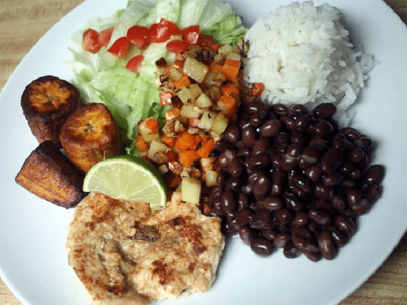

üìù BLOG SODA SABORTICO
CATEGORÍAS
Todas
Recetas e Historia
Artículos
üìñ Recetas e Historia
üì∞ Art√≠culos Destacados

ARTÍCULO
Los Secretos del Gallo Pinto Perfecto
Descubre las técnicas tradicionales y consejos de expertos para preparar el desayuno más emblemático de Costa Rica.
üìÖ 15 de Octubre, 2025
Leer más →

ARTÍCULO
El Casado Tico: Historia y Tradición
Conoce el origen del plato más completo de la cocina costarricense y por qué lleva ese peculiar nombre.
üìÖ 10 de Octubre, 2025
Leer más →
ARTÍCULO
El Pollo Achiotado: Nuestra Especialidad
El achiote le da ese color dorado y sabor único a nuestro pollo. Te contamos su historia y preparación.
üìÖ 5 de Octubre, 2025
Leer más →
ARTÍCULO
Tortillas Palmeadas: Un Arte Costarricense
Las tortillas hechas a mano son parte esencial de nuestra cultura. Aprende sobre esta tradición ancestral.
üìÖ 1 de Octubre, 2025
Leer más →